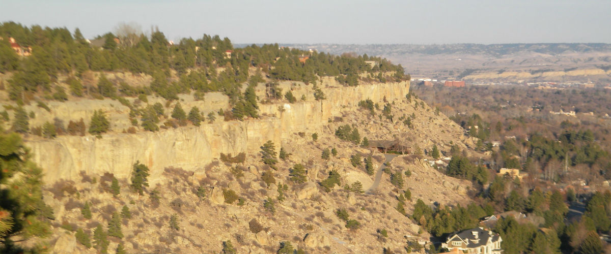
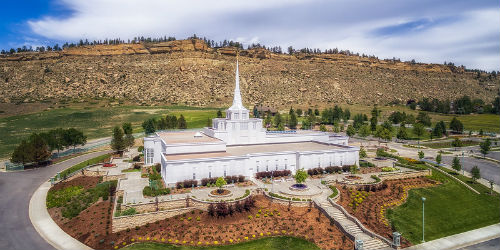

About Temple Inn and Suites
 The Temple Inn & Suites is a hotel chain headquartered in Bethesda, MD that builds and manages specialized hotel accommodations near temple locations of The Church of Jesus Christ of Latter-day Saints around the world. The owner-operated company caters to temple workers, patrons, and their families by providing specialized services and accommodations that meet the needs of those patrons. The hotel accommodations and services are available to anyone willing to abide by the terms and policies outlined by the company.
Article about Billings Mt Temple
 Billings, Montana's largest city, is a metropolitan hub and commercial and cultural center for a large part of eastern Montana and northern Wyoming. That made it a natural choice for a temple to serve the members of those areas who were filled with faith as the Church grew stronger in the city. Ordinance workers, Maurice and Maude Asay, said at the temple's dedication, "We have believed for the last 25 years that we would have a temple here."On the exterior, the temple is unique in many ways. The spire, topped by a statue of Angel Moroni, rises from a tiered tower faced with louvered vents that appear to be shuttered windows. The west end of the single story building is accentuated by a stained-glass bay window. The temple grounds are landscaped with lawns, flower gardens and more than 250 trees and 4,500 shrubs. Retaining walls and fence foundations are built of manufactured stones painted to match the prominent, 300-foot-high Rimrock cliffs that border the rear side of the temple property.
Inside, the temple is a model of space efficiency featuring all of the amenities of larger temples—including a laundry, brides' room, chapel, and clothing rental desk—in less total square footage than other recently built larger temples. The temple has two ordinance rooms for a two-stage ceremony. A clear skylight over the main foyer offers patrons a view of the Angel Moroni statue atop the spire.